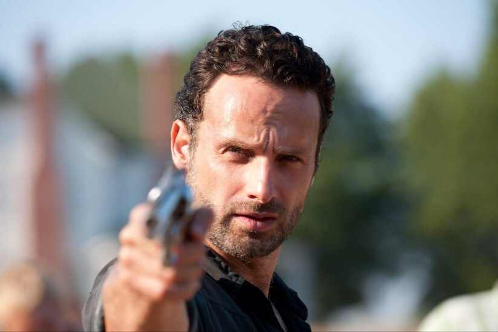
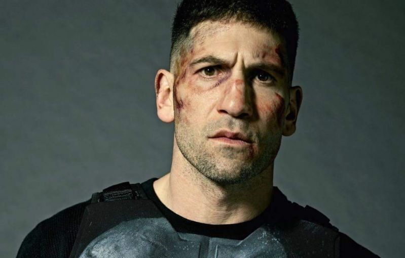
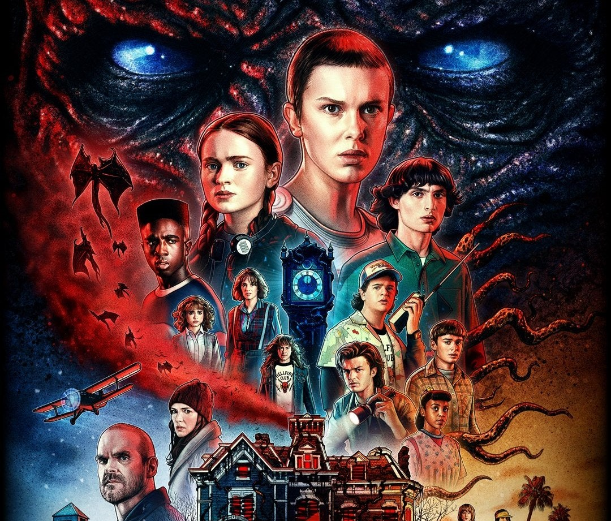
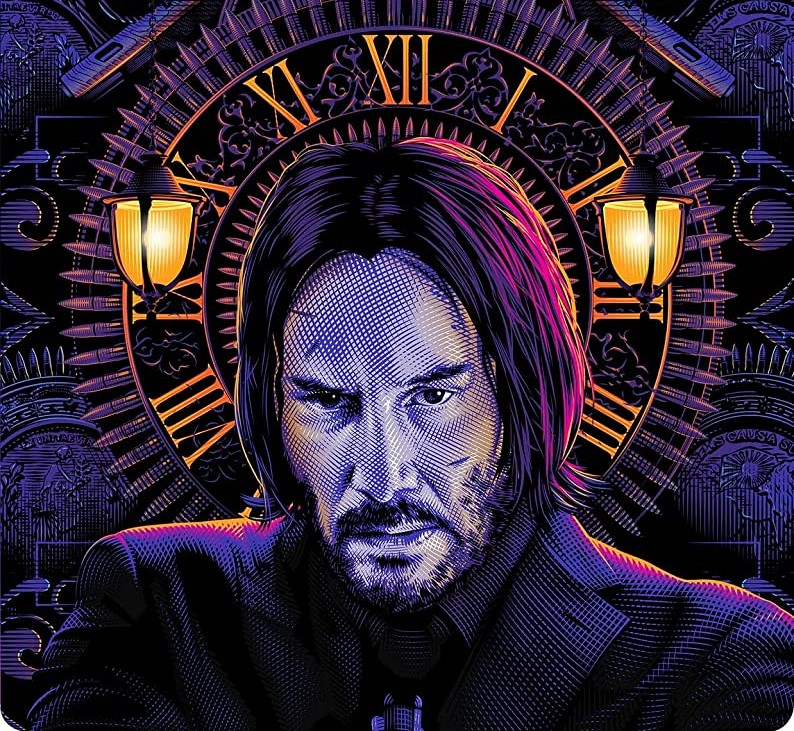
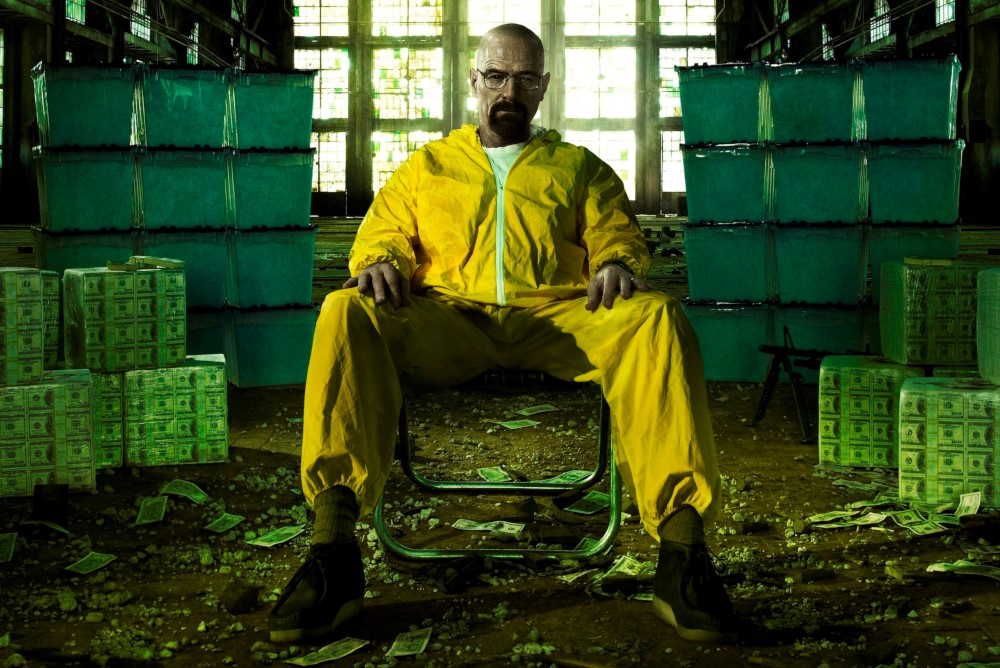
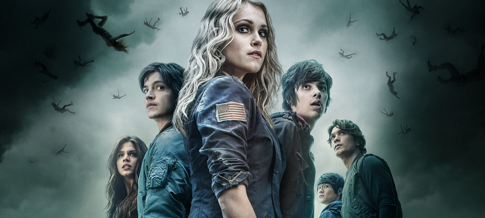
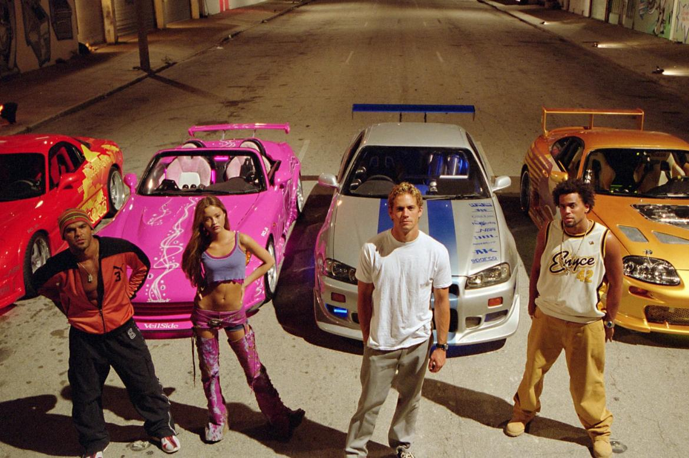
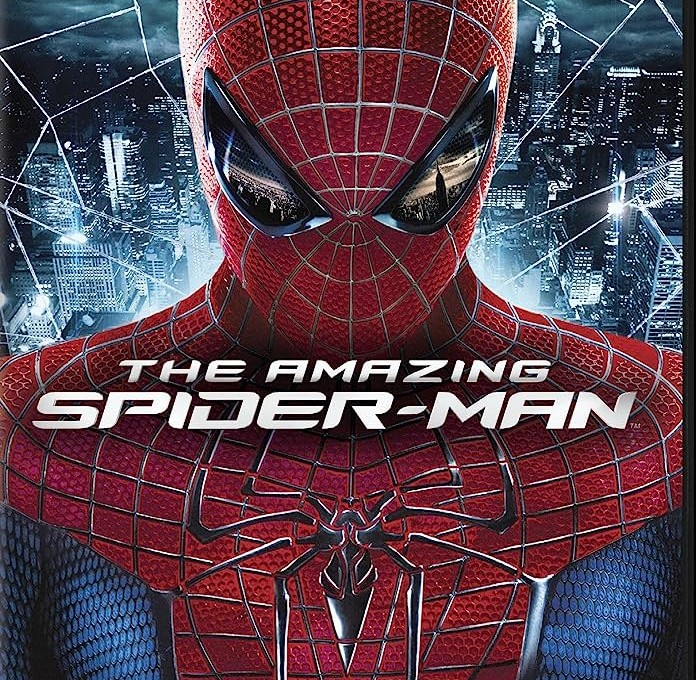

-
The Walking Dead

A sobrevivência em um mundo pós-apocalíptico, dominado por zumbis, é o centro desta série de ação e suspense.
-
Punisher

Uma série de ação, fruto da parceria entre Marvel e Netflix, mostra a vida de Frank Castle, um homem em busca de vingança.
-
Stranger Things

Ambientada nos anos 80, esta série de ficção científica da Netflix segue um grupo de amigos enquanto eles enfrentam forças sobrenaturais em sua pequena cidade.
-
John Wick

Protagonizado por Keanu Reeves, John Wick é uma franquia de filmes cheia de ação e suspense que mostra a vida de um ex-assassino que é forçado a voltar à ativa.
-
Breaking Bad

Esta série de suspense mostra a vida de Walter White, um professor de química que se torna um proeminente fabricante de metanfetaminas após ser diagnosticado com câncer terminal.
-
The 100

Ambientada num futuro pós-apocalíptico, esta série de suspense e aventura acompanha um grupo de jovens enquanto eles lutam pela sobrevivência na Terra após uma guerra nuclear.
-
Mr. Robot
Este thriller psicológico segue Elliot Alderson, um hacker e engenheiro de segurança cibernética que se envolve em uma complexa conspiração.
-
You
Esta série de suspense psicológico da Netflix segue Joe Goldberg, um gerente de livraria que se torna obsessivo pelas mulheres por quem se apaixona.
-
Velozes e Furiosos

Esta franquia de filmes de ação segue a vida de Dominic Toretto e sua equipe enquanto eles embarcam em várias aventuras automobilísticas ao redor do mundo.
-
Amazing Spider Man

Esta série de filmes da Marvel retrata a vida de Peter Parker, um estudante de ensino médio que adquire superpoderes após ser mordido por uma aranha geneticamente modificada.